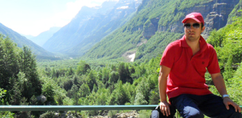

Convenios establecidos
Con el propósito de que cada dólar que COLFUTURO entregue se multiplique para sus beneficiarios, en los últimos años se han firmado una serie de convenios con instituciones educativas y universidades.
A la fecha, COLFUTURO tiene 51 convenios en los que se ofrecen descuentos en matrícula que van desde el 10 hasta el 100%, o que contribuyen a los gastos de sostenimiento mientras el estudiante está en el exterior. Se destacan los siguientes:
COLFUTURO - Colciencias - Icetex
Se ha acordado con el Gobierno Nacional una cooperación por un periodo de al menos diez años. Durante esta década, el Gobierno va a aportar los dineros correspondientes a la condonación (beca) que se les da a los profesionales seleccionados. Para estos beneficiarios, el apoyo que ofrece COLFUTURO sigue siendo el mismo de años anteriores; solamente cambia la fuente de los recursos.
Por su parte, COLFUTURO aportará a los beneficiarios los recursos de la porción de crédito del apoyo. Se encargará de realizar la selección, mantener un estrecho seguimiento académico, hacer los giros a los beneficiarios mientras se encuentren estudiando, y de recaudar la cartera y apoyarlos a su regreso para que se ubiquen en importantes posiciones laborales en el Estado, la academia, la investigación o el sector privado.
Esta cooperación se inició en 2007, en el marco de un convenio que se firmó entre el Ministerio de Educación Nacional, el Icetex y COLFUTURO. A partir de 2008, ese esfuerzo mancomunado se da dentro de un nuevo convenio firmado entre Colciencias, el Icetex y COLFUTURO.
COLFUTURO - Ministerio de Defensa
Se ha acordado con el Gobierno Nacional una cooperación por un periodo de al menos diez años. Durante esta década, el Gobierno va a aportar los dineros correspondientes a la condonación (beca) que se les da a los profesionales seleccionados. Para estos beneficiarios, el apoyo que ofrece COLFUTURO sigue siendo el mismo de años anteriores; solamente cambia la fuente de los recursos.
COLFUTURO - Harvard
Se ha acordado con el Gobierno Nacional una cooperación por un periodo de al menos diez años. Durante esta década, el Gobierno va a aportar los dineros correspondientes a la condonación (beca) que se les da a los profesionales seleccionados. Para estos beneficiarios, el apoyo que ofrece COLFUTURO sigue siendo el mismo de años anteriores; solamente cambia la fuente de los recursos.
COLFUTURO - DAAD
Se ha acordado con el Gobierno Nacional una cooperación por un periodo de al menos diez años. Durante esta década, el Gobierno va a aportar los dineros correspondientes a la condonación (beca) que se les da a los profesionales seleccionados. Para estos beneficiarios, el apoyo que ofrece COLFUTURO sigue siendo el mismo de años anteriores; solamente cambia la fuente de los recursos.
COLFUTURO - Embajada de Francia
Se ha acordado con el Gobierno Nacional una cooperación por un periodo de al menos diez años. Durante esta década, el Gobierno va a aportar los dineros correspondientes a la condonación (beca) que se les da a los profesionales seleccionados. Para estos beneficiarios, el apoyo que ofrece COLFUTURO sigue siendo el mismo de años anteriores; solamente cambia la fuente de los recursos.
COLFUTURO - Embajada de Francia - CEF
Se ha acordado con el Gobierno Nacional una cooperación por un periodo de al menos diez años. Durante esta década, el Gobierno va a aportar los dineros correspondientes a la condonación (beca) que se les da a los profesionales seleccionados. Para estos beneficiarios, el apoyo que ofrece COLFUTURO sigue siendo el mismo de años anteriores; solamente cambia la fuente de los recursos.
COLFUTURO - Embajada de Francia - Ascún
Se ha acordado con el Gobierno Nacional una cooperación por un periodo de al menos diez años. Durante esta década, el Gobierno va a aportar los dineros correspondientes a la condonación (beca) que se les da a los profesionales seleccionados. Para estos beneficiarios, el apoyo que ofrece COLFUTURO sigue siendo el mismo de años anteriores; solamente cambia la fuente de los recursos.
COLFUTURO - Proimágenes Colombia
Se ha acordado con el Gobierno Nacional una cooperación por un periodo de al menos diez años. Durante esta década, el Gobierno va a aportar los dineros correspondientes a la condonación (beca) que se les da a los profesionales seleccionados. Para estos beneficiarios, el apoyo que ofrece COLFUTURO sigue siendo el mismo de años anteriores; solamente cambia la fuente de los recursos.
COLFUTURO - Ministerio de Defensa
Se ha acordado con el Gobierno Nacional una cooperación por un periodo de al menos diez años. Durante esta década, el Gobierno va a aportar los dineros correspondientes a la condonación (beca) que se les da a los profesionales seleccionados. Para estos beneficiarios, el apoyo que ofrece COLFUTURO sigue siendo el mismo de años anteriores; solamente cambia la fuente de los recursos.
Convenios por países
Hemos firmado seis convenios con universidades en los Estados Unidos, hemos firmado seis convenios con universidades en los Estados Unidos convenidos hemos firmado seis convenios con universidades.
Alemania
DAAD
Beca parcial de alrededor de €17.000 por concepto de tiquetes, sostenimiento parcial, seguro de salud,
curso de alemán y gastos de investigación.
Australia
Heinz College, Carnegie Mellon University
Descuento del 50% para un número limitado de beneficiarios de COLFUTURO admitidos en el programa de Master of Science in Public Policy and Management
y Master of Science in Information Technology.
Macquarie University
Descuento del 50% para dos estudiantes admitidos en los programas de maestría en Engineering
and Technology, Social Sciences, Humanities, Human Sciences y Natural Sciences; igualmente se tiene en cuenta a los estudiantes admitidos en otros programas de posgrado,
como Business. El resto de estudiantes admitidos y seleccionados por COLFUTURO en estos programas recibirán descuento del 10%.
Monash University
Descuento del 10% para todos los beneficiarios de COLFUTURO admitidos.
University of Adelaide
Descuento del 20% sobre el valor anual de la matrícula para beneficiarios de
COLFUTURO admitidos en Masters by Research, Posgraduate Coursework y Ph.D.
University of Melbourne
Descuento del 15% en el valor de la matrícula para beneficiarios de COLFUTURO
admitidos en programas de posgrado en la Escuela de Diseño y del 10% para los demás programas. Todos los descuentos se ofrecen por un periodo igual a la
duración total del programa de estudios.
University of Queensland
Descuento del 10% sobre el valor de la matrícula para beneficiarios COLFUTURO admitidos
en los programas de posgrado; descuento del 20% sobre el valor anual de la matrícula para un estudiante admitido en cada programa seleccionado: Masters of Agribusiness,
Master of Business (Entrepreneurship), Master of Business (International Travel and Tourism Management), Masters of Engineering Management, Masters of Environment
Management, y dos becas de matrícula a candidatos a Ph.D. en ciertas áreas específicas.
University of Technology Sydney (UTS)
Beca del 100% para cinco estudiantes admitidos en programas de maestría o
doctorado. Dos de ellas para estudiantes de Masters by Coursework y tres para estudiantes de Postgraduate Higher Research Degrees (Masters by Research y Ph.D.).
Canadá
DAAD
Beca parcial de alrededor de €17.000 por concepto de tiquetes, sostenimiento parcial, seguro de salud,
curso de alemán y gastos de investigación.
Costa Rica
DAAD
Beca parcial de alrededor de €17.000 por concepto de tiquetes, sostenimiento parcial, seguro de salud,
curso de alemán y gastos de investigación.
Dinamarca
DAAD
Beca parcial de alrededor de €17.000 por concepto de tiquetes, sostenimiento parcial, seguro de salud,
curso de alemán y gastos de investigación.
España
DAAD
Beca parcial de alrededor de €17.000 por concepto de tiquetes, sostenimiento parcial, seguro de salud,
curso de alemán y gastos de investigación.
Estados Unidos
DAAD
Beca parcial de alrededor de €17.000 por concepto de tiquetes, sostenimiento parcial, seguro de salud,
curso de alemán y gastos de investigación.
Francia
Italia
DAAD
Beca parcial de alrededor de €17.000 por concepto de tiquetes, sostenimiento parcial, seguro de salud,
curso de alemán y gastos de investigación.
Países Bajos
DAAD
Beca parcial de alrededor de €17.000 por concepto de tiquetes, sostenimiento parcial, seguro de salud,
curso de alemán y gastos de investigación.
Reino Unido
DAAD
Beca parcial de alrededor de €17.000 por concepto de tiquetes, sostenimiento parcial, seguro de salud,
curso de alemán y gastos de investigación.
QUÉ OFRECE COLFUTURO
TIPS
¿Cómo elegir un posgrado?
El proceso de selección de una universidad y de un posgrado en el exterior implica ciertos desafíos, por lo cual es muy importante hacer un buen ejercicio de planeación e investigar con anticipación.
DEFINA SUS METAS
Es muy importante tener claras las metas de su educación y de su carrera, así como la relación entre estas y su deseo de emprender estudios de posgrado.
CONSULTE UN CENTRO DE INFORMACIÓN Y ASESORÍA EN EDUCACIÓN INTERNACIONAL
Los asesores educativos y entidades como Icetex, Colciencias, las universidades, los centros binacionales y COLFUTURO están capacitados para brindar información y consejos a quienes desean estudiar en el exterior.
VERIFIQUE LA ACREDITACIÓN DE LA UNIVERSIDAD
Las clasificaciones de universidades o ‘rankings’ le pueden servir como punto de partida para tomar la decisión que sea más adecuada para usted.
DECIDA DÓNDE ENVIARÁ SUS SOLICITUDES
Suprima de su lista las instituciones que no satisfagan sus necesidades personales o las que imponen requisitos de admisión que no concuerdan con sus aptitudes. Reduzca el número de opciones de acuerdo a sus necesidades.
Nuestros Semilleros hablan
“La ayuda que me brindó COLFUTURO fue indispensable en el proceso que lleve acabo para realizar mis posgrado en Alemania. Estuvieron conmigo incondicionalmente de comienzo a fin.” - Nelson Cuevas Valderrama

“La ayuda que me brindó COLFUTURO fue indispensable en el proceso que lleve acabo para realizar mis posgrado en Alemania.” - Natalia Barón